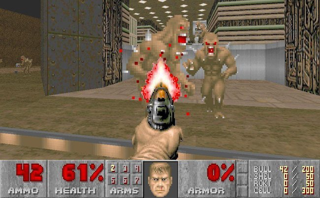
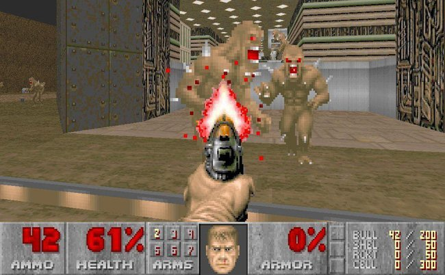
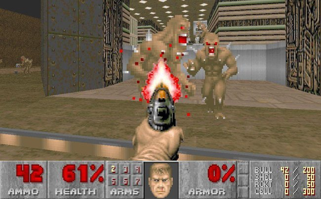

First Person Camera
Un tipus de càmera molt popular, usualment vinculada a shooters. El jugador veu des del punt de vista dels ulls del personatge.
 

Fixa en una posició, sense cap tipus de moviment ni orientació extra. Permet millors esforços en la part d'escenari visible i jugable
Definida per 2 marges: marc de visió actual i el segon (que conté al primer) és el del límit o marge. Usant els controls, podrà mirar dins el marge usant el marc de visió
La càmera es mou i el món es mou amb ella. Hi ha 2 tipus de Parallax: forçat o seguiment. El forçat és el joc el que mou la càmera, forçant el ritme de gameplay. El de seguiment és la càmera la que segueix al player.
Un tipus de càmera molt popular, usualment vinculada a shooters. El jugador veu des del punt de vista dels ulls del personatge.

Mostra al player al joc mitjançant el seu avatar i enemics i perills planen al voltant de la posició actual. Mirarà sempre l'esquena del personatge? Sempre a la seva cara o de perfil? autoajustable després d'un temps? Com es comportarà la càmera amb les cantonades, vores i geometria? En quina posició i distància es col·locarà del personatge jugable?